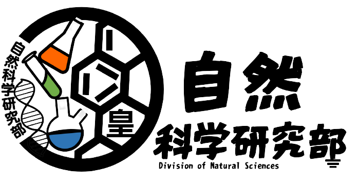

などと思っている人必見
いつでも自然科学部なら問題ありません
皆さん学校に入学してしばらく経ったりしたと思いますが、「やっぱりなにか入っておけばよかった」とか思ったことがあると思います。
現在自然科学部部長の自分でさえ入部届を出したのは夏休みの間に出すということをしました.
４月からどれだけ経っても入部しても全然大丈夫でむしろ入部していただきたいぐらいです。
割りと兼部している人が多い
実は上記のグラフのように兼部している人がX割もいることがわかります
運動部だからといって兼部できないという事はありません。運動部でも※1 例外はありますが問題なく兼部できます.
現在自然科学部と銃剣道部を兼部している伊藤さんにお話を聞くと
「兼部してよかったです」とYていました。
まとめ
>体験入部が終わったという事はなく全然途中から入っても兼部しても大丈夫という事です。
気にせず気軽に体験入部に来て是非入部を考えていただければ幸いです。
お知らせ
- 2022/1/1
- お知らせはありません
- 20XX/00/00
- お知らせはありません
